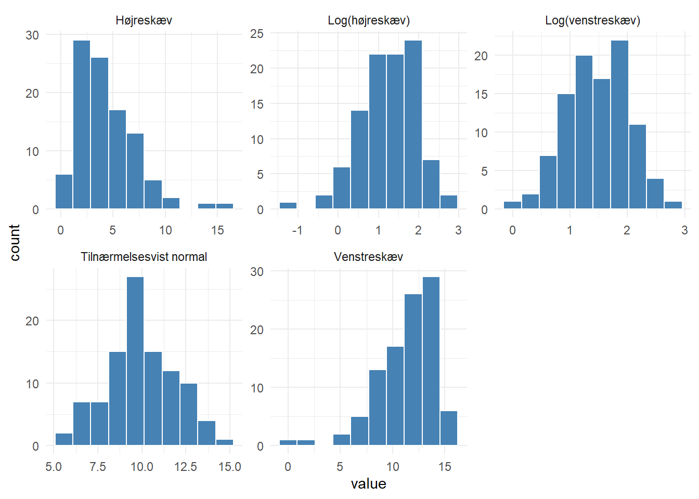

pnorm(1)*100[1] 84.13447Hvis vores observationer er normalfordelte med \(\mu = 0\) og \(\sigma = 1\)
Hvor stor en andel af observationerne er mindre end 1 (\(\sigma\))?
Hvor mange observationer er mindre end -2 (\(\sigma\))
hvilken værdi (af σ) er 15.9% af observationerne mindre (end denne værdi)?
Hvilken andel af observationerne i standardnormalfordelingen er mindre end -3?
Hvilken andel af observationerne i standardnormalfordelingen er mindre end 2?
Hvilken andel af observationerne i standardnormalfordelingen er større end 2?
Hvad er 25% af observationerne mindre end?
Hvad er 40% af observationerne større end?
Hvilken andel af observationerne ligger mellem 1 og 1.5?
Hvilken andel ligger under 1.5?
Hvilken andel ligger under 1?
Det er så
Hvis vi vil have 47% af observationerne, hvilket interval (centreret om 0) skal vi så have?
Hvor meget ligger så uden for det interval?
53%
Det skal fordeles ligeligt på begge sider, så 53/2=26.5
Hvis vi vil have 95% af observationerne, hvilket interval (centreret om 0) skal vi så have?
Hvis intervallet skal indeholde 95% af observationerne - hvor meget ligger så uden for?
1-0.95 = 0.05
Det skal fordeles ligeligt på begge sider så 0.05/2 = 0.025
og
Nappet direkte fra en eksamensopgave
For en population af normalfordelte værdier ved vi at: 40% af værdierne er større end 0.1, og 70% af værdierne er mindre end 1. Hvad er middelværdi og spredning i denne normalfordeling?
Den tager vi på tavlen.
Det er oplyst at X∼N(μ,σ)
P(X>0.1)=0.4⇔P(X<0.1)=1−0.4=0.6
Standardiseret:
P(X−μσ<0.1−μσ)=0.6⇒0.1−μσ=qnorm(0.6)=0.253
Og:
P(X<1)=0.7
Standardiseret:
P(X−μσ<1−μσ)=0.7⇒1−μσ=qnorm(0.7)=0.524
Dermed:
0.1−μσ=0.253⇔0.1−μ=0.253σ
og
1−μσ=0.524⇔1−μ=0.524σ
Træk første ligning fra den anden og isoler σ:
(1−μ)−(0.1−μ)=0.524σ−0.253σ⇔1−μ−0.1+μ=(0.524−0.253)σ
1−0.1=0.271σ⇔0.90.271=σ=3.32
Indsæt i en af ligningerne for at finde μ:
1−μ=0.524σ⇔1−μ=0.534⋅3.32⇔1−0.534⋅3.32=μ=−0.77
Vi har en normalfordelt population med σ=6.52 . 40% af værdierne er mindre end 0. Hvad er så μ for denne fordeling?
X∼N(μ,6.52)
P(X<0) = 0.4
Skaler: P(Z<0−μ6.52)=0.4
0−μ6.52=qnorm(0.4)=−0.2533471 Isoler μ
En normalfordelt population har middelværdi μ=12.5 og standardafvigelse σ=3.2 . Hvor stor en andel af værdierne er mindre end 10?
Med andre ord, hvad er: P(X<10)
Transformer til standardnormalfordelingen: P(Z<(10−μ)/σ)
Indsæt
I en normalfordelt population er μ=85 og 25% af værdierne er større end 95. Hvad er σ for denne fordeling?
P(x > 95) = 0.25
P(X < 95) = 1-0.25
Standardiser
\(P(Z < \frac{95 - \mu}{\sigma}) = 0.75\)
Indsæt og brug qnorm til at komme af med P
\((95-85)/\sigma = qnorm(0.75)\)
Isoler \(\sigma\)
\(10/qnorm(0.75) = \sigma\)
En normalfordelt variabel har μ=50 og σ=8 . For hvilken værdi y er 90% af observationerne < y?
P(X < y) = 0.9
Standardiser
P(Z < (y-μ)/σ) = 0.9
qnorm of at komme af med P
(y-μ)/σ = qnorm(0.9)
Indsæt (y-50)/8 = qnorm(0.9)
Isoler y
For en normalfordeling gælder at σ=4.5 og 75% af værdierne er > 18. Hvad er μ?
P(X > 18) = 0.75
P(X < 18) = 1- 0.75
Standardiser
P(Z < (18-μ)/σ) = 0.25
Indsæt og brug qnorm til at komme af med P
(18-μ)/4.5 = qnorm(0.25)
Isoler μ
Manglende interval-grænse En normalfordelt population har μ=100 og σ=15 . Hvis 80% af værdierne ligger mellem 85 og en øvre grænse x , hvad er da denne øvre grænse?
Eller: find y således at: P(85 < X < y) = 0.8
TAVLE
Samlet sandsynlighed op til y P(X < y)
Fra det skal vi trække den del hvor X er mindre end 85
P(X < 85)
Så: P(X < y) - P(X < 85) = 0.80
P(X < 85) kan vi beregne
Standardiser
P(Z < (85-μ)/σ))
Indsæt, og brug pnorm for at få sandsynligheden
Så ved vi at P(X < y) - P(X < 85) = 0.80
bliver P(X < y) - 0.1586553 = 0.80
og derfor at
P(X < y) = 0.80 + 0.1586553 = 0.9586553
Standardiser (igen)
P(X < (y-μ)σ) = 0.9586553
Af med P ved hjælp af qnorm, og indsæt
(y-100)/15 = qnorm(0.9586553)
Isoler y
y = 15*qnorm(0.9586553) +100
“Summariske regnestørrelser” for plasma magnesium er givet. Og vi får lov at antage at det er normalfordelt for de to populationer stikprøverne er trukket:
A tibble: 2 × 4 gruppe Antal Gennemsnit Spredning
0.81 + c(-1,1)*0.057
HVAD ER DET VI GØR MED c(-1,1)
Hvilken andel af målingerne i populationen af diabetikere vil ligge i det interval vi beregnede for ikke-diabetikerne?
Eller for: X ~ N(0.719, 0.068) hvor mange ligger over værdien 0.7. og hvor mange ligger under 0.92?
Eller: P(0.7 < X < 0.92) = P(X < 0.92) - P(X < 0.7)
TAVLE!
Diabetikerne havde middel = 0.719 og spredning 0.068
Normaliser
P(X < 0.92) - P(X < 0.7)
P(Z < (0.92-0.719)/0.068) - P(Z < (0.7-0.719)/0.068)
library(tidyverse)
set.seed(47)
n <- 100
# højreskæv
right_skew <- rgamma(n, shape = 2, scale = 2)
# venstreskæv (spejlet højreskæv)
left_skew <- max(right_skew) - right_skew
# tilnærmelsesvist normal
normal <- rnorm(n, mean = 10, sd = 2)
# log-transformerede
log_right <- log(right_skew)
log_left <- log(max(left_skew) + 1 - left_skew)
df <- tibble(
value = c(right_skew, left_skew, normal, log_right, log_left),
type = rep(
c(
"Højreskæv",
"Venstreskæv",
"Tilnærmelsesvist normal",
"Log(højreskæv)",
"Log(venstreskæv)"
),
each = n
)
)
ggplot(df, aes(x = value)) +
geom_histogram(bins = 10, fill = "steelblue", color = "white") +
facet_wrap(~type, scales = "free") +
theme_minimal()
SKAL HAVE JUSTERET LABELS! Hvad kan vi sige om disse fordelinger?
Ud over at vi nok vil blive bedt om at forholde os til hvor gennemsnittene sådan på øjemål ligger, og om der er mere eller mindre spredning i den ene frem for den anden. Så skal vi kunne fortælle at “denne er højreskæv” “denne er venstreskæv” og de log-transformerede data er tilnærmelsesvist normalfordelte.
Polske piger: log(D-vitaminniveau) gennemsnit: 3.389 sd = 0.418 n = 61
Beregn variationen på gennemsnittene for det log-transformerede D-vitaminniveau for hhv de danske og polske piger.
Danske: 0.495/sqrt(59) polske: 0.418/sqrt(61)
danske:
Hvert KI indeholder med 95% sandsynlighed den sande værdi for den log-transformerede D-vitaminkoncentration for de to grupper. Intervallerne overlapper, men ingen af de to gennemsnit ligger i det andet KI, og vi kan derfor ikke konkludere om der er en signifikant forskel.
forskel:
::: {.cell}
:::
poolet SEM
Testværdien:
Testværdien er større end 1.96 (i absolutte værdier). Og forskellen er derfor signifikant.
p-værdi:
Og der skal ganges med to…
Det danske referenceinterval:
Hvis X er normalfordelt med middelværdi 3.389 og sprednign 0.418, skal vi beregne: P(2.24668 < X < 4.17532) <=> P(X < 4.17532) - P(X < 2.24668)
Vi kan bruge pnorm direkte (cowboytricket)
Eller vi kan standardisere så vi kan bruge standardnormalfordelingen.
Vi får oplyst data for 18 tilfældigt valgte insulin-afhængige diabetikere. Data er procent af idealvægt. 95 betyder at pågældende individ fjer 5% mindre end idealvægten. 120 beetyder at vedkommende vejer 20% mere end idealvægten.
Vi får oplyst at et 90% reference interval kan beregnes til (89.1; 136.5)
Et referenceinterval er centreret om middelværdien. Så middel finder vi ved: (89.1+136.5)/2 = 112.8
Så skal vi finde spredningen. Det er et 90% interval. så den kvantil der er brugt er ikke 95% kvantilen (1.96), men 90% kvantilen:
0.95 i stedet for 0.975 fordi der skal være 5% på hver side, ikke 2.5%
Intervallet er +/- på hver side af middelværdienm så: 136.5-112.8 = 1.644854*s -> s = (136.5-112.8)/1.644854 = 14.4
Så ved vi hvad standardafvigelsen er på data. Nu skal vi have konfidensintervallet på middelværdien - så vi skal bruge SEM:
14.4/sqrt(18) = 3.394113
Og så finder vi konfidensintervallet ved: 112.8 + c(-1,1)1.9614.4/sqrt(18)
Og her er der altså en regnefejl i modelløsningen…
fra a ser vi at 95% konfidensintervallet ikke indeholder 100 - så vi må afvise nullhypotesen H_0: mu = 100, hvor mu angiver den sande middelprocent af idealvægt for populationen af insulin-afhængige diabeetikere. Estimatet for mu er 112.8 med et 95% KI på det vi tidligere beregnede.
Et studie i England undersøgte faktorer for tidlig fødsel blandt gravide kvinder og fandt at incidensen for tidlig fødsel var 7.5% blandt de 1513 kvinder der var med i studiet.
Der er et 0 for lidt i modelbesvarelsen…
forskel:
se_dk:
et 95% ki for diffen:
Intervallet indeholder ikke 0, og vi kan konkludere at der er en statistisk signifikant forskel.
Vi skal se på blodtryksmålinger fra 641 forsøgspersoner i Ghana. Det er et interventionsstudie, der skulle undersøge om en ny behandling kunne sænke blodtrykket for patienter med ukontrolleret hypertension. Der er to behandlingsgrupper: control og treatment. Begge grupper har fået standard behandling med primærpleje, medicinsk konsultation, test og medicin. treatmentgruppen har dertil fået en personligt tilpasset behandling af sygepeljersker med speciale i hypertensionsbehandling. Behandlingen blev randomiseret, og vi har blodtryksmålinger fra baseline (før behandling) og efter 12 måneder. Vi kender patienternes køn. Der var 323 individer i treatment gruppen.
Data har følgende variable:
SBPbl: systolisk blodtryk ved baseline (mmHg) SBP12: systolisk blodtryk efter 12 måneder group (control/treatment) sex (male/female) diff: differensen mellem SBP12 og SBPbl
Gennemsnit og spredning for diff i kontrolgruppen er -16.6 hhv 19.9 De tilsvarende tal i interventionsgruppen er -19.6 og 17.4
Vi starter med SEM for de to grupper:
Intervention: n= 323
Så kan vi beregne 95% KI beregnes for de to grupper:
intervention:
kontrol:
Ingen af de to KI indeholder 0, så vi kan konkludere at begge behandlinger sænker det systoliske blodtryk signifikant.
De to KI overlapper, men ingen af dem indeholder gennemsnittet fra det andet KI. så vi kan ikke bruge KI til at konkludere. Vi beregner SEM for differensen:
Det giver os en teststørrelse på forskellen på de to differenser på:
Som (i absolutte tal) er større end 1.96 - der er en signifikant forskel.
| Estimate | Std. Error | t value | Pr(>|t|) | |
|---|---|---|---|---|
| (Intercept) | -16.988 | 1.3556 | -12.527 | <2e-16*** |
| factor(group[sex=='female'])treatment | -5.915 | 1.901 | -3.112 | 0.002** |
summary(lm(diff[sex==“male”]~factor(group[sex==“male”])))
| Estimate | Std. Error | t value | Pr(>|t|) | |
|---|---|---|---|---|
| (Intercept) | -15.893 | 1.594 | -9.968 | <2e-16*** |
| factor(group[sex=='male'])treatment | 1.692 | 2.264 | 0.747 | 0.456 |
Hvilke analyser er er tale om, og hvad kan vi konkludere på baggrund af disse? Der ønskes en fortolkning af værdierne i “Estimate” søjlerne. Giver det anledning til en anden konlusion end den vi fik lige før?
Der er tale om to multiple lineære rgressioner, med diff som kontinuært responsvariabel og group som forklarende, kategorisk (og binær) variabel.
For kvinderne ser vi at blodtrykket i gennemsnit falder med ca 17 mmHg under kontrolbehandling (signifikant, med p ~ 0), og yderligere ca 6 mmHg ved præcisionsbehandlingen (signifikant med p = 0.002)
For mændene ser vi at blodtrykket i gennemsnit falder med ca. 16 mmHg under kontrolbehandling, men at der ikke er signifikant forskel på effekten af de to behandlinger (p=0.456)
Vi har data fra 583 personer, der er blevet henvist til undersøgelse pga mistanke om leversygdom. De første 6 observationer er:
library(tidyverse)
tribble(~age, ~albumin, ~ratio, ~globulin, ~status, ~idnr, ~sex, ~l_ratio,
65, 3.3, 0.90, 3.666667, 1, 1, "F", -0.1053605,
62, 3.2, 0.74, 4.324324, 1, 2, "M", -0.3011051,
62, 3.3, 0.89, 3.707865, 1, 3, "M", -0.1165338,
58, 3.4,1.00,3.400000,1,4,"M",0,
72, 2.4, 0.4, 6, 1,5,"M",-0.9162907,
46, 4.4,1.3,3.384615,1,6,"M",0.2623643
)# A tibble: 6 × 8
age albumin ratio globulin status idnr sex l_ratio
<dbl> <dbl> <dbl> <dbl> <dbl> <dbl> <chr> <dbl>
1 65 3.3 0.9 3.67 1 1 F -0.105
2 62 3.2 0.74 4.32 1 2 M -0.301
3 62 3.3 0.89 3.71 1 3 M -0.117
4 58 3.4 1 3.4 1 4 M 0
5 72 2.4 0.4 6 1 5 M -0.916
6 46 4.4 1.3 3.38 1 6 M 0.262Variable: idnr: Løbenummer sex: Køn age: alder i år status: leversygdom, 1=ja albumin: serum albumin g/dL globulin: serum globulin g/dL ratio: ratio m. albumin og globulin l_ratio: log(ratio) (den naturlige logaritme)
Vi får denne tabel:
status <- c(rep(0, 50 + 117),
rep(1, 92 + 324))
sex <- c(rep("F", 50), rep("M", 117),
rep("F", 92), rep("M", 324))
table(status, sex) sex
status F M
0 50 117
1 92 324Og opyst at log-ratio er normalfordelt.
For status = 0 får vi:
| Gennemsnit | Spredning (sd) | |
|---|---|---|
| l_ratio | -0.011 | 0.289 |
| age | 41.2 | 17.0 |
og for status = 1
| Gennemsnit | Spredning (sd) | |
|---|---|---|
| l_ratio | -0.152 | 0.358 |
| age | 46.2 | 15.7 |
Vi skal bestemme ki for log-ratio mellem syge og raske. Det skal vi bruge SEM til. Raske der er 50+117 = 167, SEM = 0.289/sqrt(167) = 0.02236349 for syge: 92+324 = 416, SEM = 0.358/sqrt(416) = 0.01755239
den poolede sem er derfor: sqrt( 0.02236349^2 + 0.01755239^2) = 0.02842907
Vi skal se om forskellen er 0. forskellen observerer vi til: -0.152 - -0.011 = -0.141 Det giver en teststørrelse på: -0.141/0.02842907 = -4.96
det er klart signifikant (den er næsten fem standardafvigelser fra 0). der er en signifikant lavere l_ratio blandt de syge.
Hvordan beregnes standardfejlen på det?
s.e. for en andel finder vi ved sqrt(p(1-p)/n)
så se_0 = sqrt(0.2994012(1-0.2994012)/(50+117)) = 0.03544078 og se_1 = sqrt(0.2211538(1-0.2211538)/(92+324)) = 0.02034822
Er den sande værdi af forskellen på de to andele (af kvinder i hhv syg og rask-grupperne) i virkeligheden 0?
Vi ved ikke om spredningen er ens i de to grupper. Så vi skal bruge den poolede se.: se_p = sqrt(0.03544078^2+ 0.02034822^2) = 0.04086684
forskellen er: 0.2994012-0.2211538 = 0.0782474
og den ligger så: 0.0782474/0.04086684 = 1.914692 standardfejl fra 0. Og det er ikke signifikant - fordi det er mindre end 1.96.
two-sample t-test. så er forskellen på gennemsnitlig alder forskellig fra 0? Her nævnte eksamensspørgsmålet specifikt at man blot skulle forklare hvad man ville gøre - man skulle ikke regne.
Det gav dette output:
| Estimate | Std. Error | t value | Pr(>|t|) | |
|---|---|---|---|---|
| (Intercept) | 0.1730998 | 0.0488724 | 3.542 | 0.000430*** |
| factor(status)1 | -0.1196883 | 0.0310025 | -3.861 | 0.000126*** |
| factor(sex)M | 0.0042939 | 0.0324442 | 0.132 | 0.894756 |
| age | -0.0045177 | 0.0008616 | -5.241 | 2.24e-7*** |
Hvilken analyse er der tale om, og hvad kan vi konkludere på baggrund af den? Fortolk værdier i søjlen “Estimate” svarende til variablene status og age.
Det er en multipel lineær regression med l_ratio som responsvariabel og status, sex og age som forklarende variable. age er kontinuer, status og sex er kategoriske (det ser vi bladnt andet af “factor”). Syge har i gennemsnit, alt andet lige, en signifikant lavere l_ratio end raske. Den estimerer vi til at være ca. 0.12 lavere, jsuteret for køn og alder. Den tilhørende p-værdi er 0.0001 og derfor signifikant. Alderseffekten er også signifikant (p<0.001), og l_ratio falder, i gennemsnit, med 0.0045 pr år. Justeret for status og køn.
middelværdien kan vi beregne ved: 0.1730998+-0.1196883+50*-0.0045177 = -0.17 Vi har fået oplyst at l_ratio er normalfordelt. I så fald er median og middel ens, så det er medianen vi har fundet. Der efterspørges ratio, ikke l_ratio, så vi skal beregne exp(-0.17) = 0.8436648
Sygdomsstatus er en kategorisk, binær variabel. Så vi ville lave en logistisk regression: glm(status~age+factor(sex1)+l_ratio, family=“binomial”).
Og så ville vi se om p-værdierne var tilstrækkeligt små til at vi kan konkludere at de er signifikante.
Vi har undersøgt koncentrationen af et hormon hos ellers sunde og raske drenge. Vi ønsker at undersøge sammenhængen mellem denne koncentration og drengenes alder og BMI.
ud fra “model = lm(osv)” kan vi se at det er en lineær regression. Den er multipel fordi der er mere end en forklarende variabel. Vi har alder som kategorisk forklarende variabel, og BMI som kontinuert forklarende variabel.
fortolk resultaterne. vi ser at hormonniveauet tilsyneladende stiger med stigende alder (og fastholdt BMI). Eksempelvis er hormonniveauet for alderskategorien (11,12] 1.08688 højere end for referencen (5,8]. Stigningen er statistisk signifikant for næsten alle aldersgrupper. Der er dog en vis variation i hvor meget hormonniveauet stiger med alderen. BMI er også klart signifikant med en middel stigning i hormonniveuaet på 0.058 pr BMI-point (ved fastholdt alder)
Prædikter (forudsig) hormonniveauet for en dreng på 6 år med et BMI på 17 og for en dreng på 14 med et BMI på 18.
Det finder vi ved: Den 6-årige: 5.40 + 0.058*17
for den 14-årige 5.40+0.229+0.058*18
Vi ser på data for lungetransplanterede patienter. Man har været ndøt til at bruge ældre donorer, der også kan have været rygere. Vi har observationer for 426 patienter.
De første 6 observationer er givet:
tribble(~fevl_prior_to_tx, ~fevl_after, ~fevl_diff, ~SMOKE,
1.40, 3.8, 2.4, "Never smoker",
0.56, 0.95, 0.39, "Smoker or former smoker",
0.37, 1.25, 0.88, "Smoker or former smoker",
0.54, 2.35, 1.81, "Smoker or former smoker",
0.71, 1.60, 0.89, "Never smoker",
1.78, 2.08, 0.30, "Never smoker")# A tibble: 6 × 4
fevl_prior_to_tx fevl_after fevl_diff SMOKE
<dbl> <dbl> <dbl> <chr>
1 1.4 3.8 2.4 Never smoker
2 0.56 0.95 0.39 Smoker or former smoker
3 0.37 1.25 0.88 Smoker or former smoker
4 0.54 2.35 1.81 Smoker or former smoker
5 0.71 1.6 0.89 Never smoker
6 1.78 2.08 0.3 Never smoker fevl_prior_to_tx: fevl målt før transplantation fevl_after: fevl målet efter transplantation fevl_diff: differencen mellem fevl_after og fevl_prior_to_tx SMOKE: Rygstatus for donor.
Vi får oplyst følgende:
| mean | sd | |
|---|---|---|
| fevl_prior_to_tx | 0.835086 | 0.5365149 |
| fevl_after | 2.122762 | 0.9459951 |
| fevl_diff | 1.279024 | 0.9411598 |
Undersøg ved brug af relevant statistik metode om patienternes lungefunktion (fevl) har ændret sig efter transplantationen.
Det er en parret t-test (for vi har målinger på samme patient både før og efter)
Det er større end 1.96, så statistisk signifikant (nogen føler trang til at sige “klart signifikant”)
| Estimate | Std. Error | t value | Pr(>|t|) | |
|---|---|---|---|---|
| (Intercept) | 1.36970 | 0.06646 | 20.61 | <2e-16*** |
| factor(SMOKE)Smoker or former smoker | -0.19092 | 0.09644 | -1.98 | 0.0485* |
Hvilken analyse er der tale om, og hvad kan vi konkludere på baggrund af denne?
Det er en multipel lineær regression med en forklarende kategorisk (og binær) variabel; SMOKE. Responsvariabel er fevl_diff. Ændringen i liungefunktion efter transplantationen er afhængig af om donor var ryger eller ikke-ryger. Det estimeres at lungefunktionen er lavere hvis donor var ryger - denne forskel er statistisk signifikant med p = 0.0485.
Intercept er den estimerede ændring i lungefunktion (før vs efter transplantation) for patienter med en donor som var ikke-ryger. Den estimerede ændring er i gennemsnit 1.3697, med et 95% KI på:
Forbedringen i lungefunktion er lidt mindre for patienter med en donor som var ryger (eller ex-ryger). Forbedringen estimeres til i gennemsnit at være 0.19092 laverem, med det tilhørende 95% KI på:
583 personer er henvist til undersøgelse pga mistanke om leversygdom De første seks observationer:
library(tidyverse)
tribble(~age, ~albumin, ~ratio, ~globulin, ~status, ~idnr, ~sex, ~l_ratio,
65, 3.3, 0.90, 3.666667, 1, 1, "F", -0.1053605,
62, 3.2, 0.74, 4.324324, 1, 2, "M", -0.3011051,
62, 3.3, 0.89, 3.707865, 1, 3, "M", -0.1165338,
58, 3.4,1.00,3.400000,1,4,"M",0,
72, 2.4, 0.4, 6, 1,5,"M",-0.9162907,
46, 4.4,1.3,3.384615,1,6,"M",0.2623643
)# A tibble: 6 × 8
age albumin ratio globulin status idnr sex l_ratio
<dbl> <dbl> <dbl> <dbl> <dbl> <dbl> <chr> <dbl>
1 65 3.3 0.9 3.67 1 1 F -0.105
2 62 3.2 0.74 4.32 1 2 M -0.301
3 62 3.3 0.89 3.71 1 3 M -0.117
4 58 3.4 1 3.4 1 4 M 0
5 72 2.4 0.4 6 1 5 M -0.916
6 46 4.4 1.3 3.38 1 6 M 0.262Variable: idnr: Løbenummer sex: Køn age: alder i år status: leversygdom, 1=ja albumin: serum albumin g/dL globulin: serum globulin g/dL ratio: ratio m. albumin og globulin l_ratio: log(ratio) (den naturlige logaritme)
Der defineres en binær variabel AG.positiv som ratio < 1.1 Det giver os denne tabel:
status <- c(rep(0, 99 + 66),
rep(1, 308 + 106))
AG.positiv <- c(rep(1, 99), rep(0, 66),
rep(1, 308), rep(0, 106))
table(AG.positiv, status) status
AG.positiv 0 1
0 66 106
1 99 308Her kører vi en chi^2 test:
input:
Pearson's Chi-squared test
data: input
X-squared = 11.709, df = 1, p-value = 0.0006219Det giver en teststørrelse på 11.7. Vi sætter correct = FALSE fordi de forventede værdier i tabellen er “store”, som i større end 5.
Det svarer til en p-værdi der er <0.001. Så der er signifikant forskel. modelbesvarlsaer bruger ofte formuleringen “klart signifikant”. teknisk set er der ikke noget der er mere signifikant end andet. det er signifikant på et bestemt niveua. Eller også er det ikke. Det er ikke “næsten” eller “meget” signifikant.
Den giver dette resultat:
| Estimate | Std. Error | z value | Pr(>|z|) | |
|---|---|---|---|---|
| (Intercept) | -0.446661 | 0.320769 | -1.392 | 0.16378 |
| factor(AG.postiv)1 | 0.594643 | 0.199556 | 2.980 | 0.00288** |
| factor(sex)M | 0.407717 | 0.211941 | 1.924 | 0.05439. |
| age | 0.015131 | 0.005927 | 2.553 | 0.01069* |
Hvilken analyse er der tale om, og hvad kan vi konkludere på baggrund af det? Angiv relevant størrelse der kvantificerer effekten af AG.positiv. beregn tilhørende 95% KI.
Det er en logistisk regression med status som responsvariabel og AG.positiv og køn som kategoriske forklarende variable, og alder som kontinuær forklarende variabel. Alder og AG.positiv er signifikante i denne justerede analyse, kønnet er ikke.
OR for AG.positiv exp(0.594643) = 1.812384 og vi estimerer derfor at odds for at status er 1 (at man er syg) er en faktor 1.8 større hvis AG.positive patienter, sammenlignet med AG.negative. KI: exp(0.594643 + c(-1,1)1.960.199556) Da det ikke indeholder 1, er resultatet signifikant (i overensstemmelse med hvad vi så fra p-værdien)
Vi beregner: -0.446661 + 0.594643 + 50*0.015131 = 0.904532
Det er logodds. Så vi finder sandsynligheden ved: odds er så: exp(0.904532) = 2.470775 Og sandsynligheden finder vi ved: odds/(1+odds) = 2.470775/(1+2.470775) = 0.7118799
Vi skal se på et randomiseret klinisk studie udført på seks forskellige europæiske hospitaler. 349 patienter med leversygdom blev randomiseret til enten den eksperimentelle behadnling UDC (176 patienter) eller placebo (173 patienter)
Udfaldet “failure of medical treatment” blev defineret som enten død eller levertransplantation i den 6 årige undersgelsesperiode. Pateienter blev fulgt fra randomiseringstidspunktet til ovenstående udfald - eller til de 6 år var gået.
Vi får de første 6t observationer i sættet. Y er udfaldsvariablen (1 “treatment failure”), R angiver behandling (1 = UDC), X den standardiserede version af logaritmen af bilirubin (umol/L), målt for hver patient ved starten af studiet
library(tidyverse)
tribble(~Y, ~R, ~X,
1, 1 , 1.616854293,
0,1,1.990367802,
0,1,-0.849360224,
1,1,1.496709981,
0,1,1.335441834,
0,1,-0.561678151)# A tibble: 6 × 3
Y R X
<dbl> <dbl> <dbl>
1 1 1 1.62
2 0 1 1.99
3 0 1 -0.849
4 1 1 1.50
5 0 1 1.34
6 0 1 -0.562table(Y,R) giver:
R
Y 0 1
0 118 134
1 55 42Risiko ved behandling: 42/(134+42)= 0.2386364
Risiko ved placebo: 55/(118+55) = 0.3179191
RR = 0.2386364/0.3179191 = 0.7506199
log(RR) = log(0.7506199) = -0.2868559
se.(log(rr)) = sqrt(1/42-1/176+1/55-1/173) = 0.174726
et 95% ki for log(rr) findes til; -0.2868559 + c(-1,1)1.960.174726 = -0.62931886 0.05560706
Derfor er 95% ki for RR: exp(c(-0.62931886, 0.05560706)) = 0.5329547 1.0571822
RR er 0.75. Så vi estimerer at behandlingen reducerer treatment failure med 25% med et 95% KI på 0.5329547 1.0571822 Da 1 er indeholdt i KI er der dermed ikke tale om en signifikant effekt.
der gav dette output:
| Estimate | Std. Error | z value | Pr(>|z|) | |
|---|---|---|---|---|
| (Intercept) | -1.3922 | 0.2088 | -6.668 | 2.60e-11*** |
| factor(R)1 | -0.9054 | 0.2967 | -3.052 | 0.00227** |
| X | 1.2632 | 0.1571 | 8.043 | 8.79e-16*** |
Hvilken analyse er der tale om. Angiv relevante effektestimater baseret på analysen og formuler konklusioner derfra.
Der er tale om en logistisk regressions analyse, med Y (Treatment failure) som afhængig variabel, og behandling/randomisering som kategorisk uafhængig, forklarende variable, samt X (den standardiserede logartime af bilirubin) som kontinuært forklarende variabel. Såvel behandlingen som X er statistisk signifikante på et 5% niveua.
For den forklarende variabel X får vi en estimeret odds ratio (OR) på behandlingen på exp(-0.9054) = 0.4043801 når der kontrolleres for den forklarende variabel X.
Det tilhøreden 95% konfidensinterval findes ved: exp(-0.9054 + c(-1,1)1.960.2967)
OR påp 0.4 svarer til en reduktion i odds for treatment failure på ca 60%, ved aktiv behandling vs. placebo, når der kontrolleres for bilirubin. Da KI ikke indeholder 1, er effekten signifikant.
Vi ser på data fra ca 1000 patienters risiko for at dø ved en operation (laparotomi). Har øget ilt-tilførsel under operationen betydning for død i en opfølgnigsperiode på ca. 3 år. Patienterne blev randomiseret til et af to ilt-regimer
Vi har følgende variable Allokering: X - patient fik 80% ilt, Y Patient fik 30% ilt diagn_cancer: j: cancer, n: ikke cancer blod: j perioperativ blodtransfusion, n ikke perioperativ blodtransfusion bmi: patientens BMI dead: 1 patienten dør i løbet af opfølgningsperioden, 0 patienten overlever
De første 6 observationer:
# A tibble: 6 × 5
Allokering diagn_cancer blod bmi dead
<chr> <chr> <chr> <dbl> <dbl>
1 Y n n 29.3 0
2 X n n 28.1 0
3 X j n 21.5 1
4 X j n 17.3 1
5 Y n n 24.2 0
6 Y n n 18.2 0Hvis vi alene betragter patienternes bmi, hvordan ville vi så undersøge om den har signifikant betydning for risikoen for dø efter operation. Outcome - dead er binær og bmi er kontinuært. Så vi vil modellere et kategorisk outcome med kontinært forklarende variabel: logistisk regression
Når vi gør det, får vi følgende resultat (de fortsætter deres juleleg med at fjerne dele af output):
| Estimate | Std. Error | z value | Pr(>|z|) | |
|---|---|---|---|---|
| (Intercept) | -0.007041 | 0.386263 | -0.018 | 0.98546 |
| bmi | 0.015385 | -3.151 |
Hvad kan vi sige ud fra det?
Vi mangler et estimat for bmi. Det kan vi beregne, fordi z-value finder vi ved at dividere estimatet med standardfejlen. Derfor kan vi finde estimatet ved at gange standardfejl med z value.
Teststørrelsen er klart signifikant
Vi kan beregne OR:
Så holdes alt andet konstant, vil en patient med et bmi der er 1 større end en anden patient, have vil odds for død reduceres med ca 5% for patienten med det højeste bmi.
Vi kan beregne et 95% KI:
1 er ikke indeholdt i intervallet, og forskellen er derfor signifkant. Det så vi også fra p-værdien vi beregnede tidligere.
Hvad kan vi konkludere ud fra det?
Vi sammenligner død (1) for de to ilt-regimer X og Y: odds_X = 139/414 = 0.3357488 P_y = 107/418 = 0.2559809
OR (X mod Y) = 0.3357488/0.2559809 = 1.311617 dvs at odds for at dø estimeres at være ca. 31% højere ved det høje ilt-regime, sammenlignet med det lave (alt andet fastholdt)
95% KI: standardfejlen på log(OR): sqrt(1/139 + 1/414 + 1/107 + 1/418) = 0.146109
exp(log(1.311617) + c(-1,1)1.960.146109)
Det indeholder 1 og estimatet er derfor ikke statistisk signifikant (de er dog i modelbesvarelser glade for at nævne at det er tæt på at være signifikant)
BETON FORSKEL PÅ OR OG RR!
, , diagn_cancer = j
Allokering
dead X Y
0 188 213
1 101 74
, , diagn_cancer = n
Allokering
dead X Y
0 226 205
1 38 33Giver det anledning til at ændre den tidligere konklusion? Begnd med effektestimater og 95% konfidensintervaller.
Samme øvelse som før, men nu på hver gruppe: Cancerpatienter: OR = (101/188) / (74/213) = 1.546363 s.e. på log(OR): sqrt(1/101 + 1/188 + 1/74 + 1/213) = 0.1828346 KI: exp(log(1.546363) + c(-1,1)1.960.1828346) = 1.080636 2.212806
Så for cancerpatienter er odds for at dø ved det høje ilt regime ca 55% højere, med et KI som angivet. Signifikant, da 1 ikke er med i KI.
non-cancer-patienter:
OR = (38/226) / (33/205) = 1.044516 se på log(OR) = sqrt(1/38 + 1/226 + 1/33 + 1/205) = 0.2567521 KI: exp(log(1.044516) + c(-1,1)1.96 0.2567521) = 0.6314854 1.7276943 Så odds er 1.04 gange større i det høje ilt-regime for ikke-cancerpatienter. Men det er ikke signifikant - for 1 er indeholdt i KI.
Så ilt-regime har betydning for cancerpatienter.
Vi skal undersøge om type 2 diabetes patienter med bedre glykæmisk kontrol, har et bedre selvvurderet helbred.
Vi har følgende variable
HBAAlC_dik: 1 hvis HbAlc < 9%, 0 hvis HbAlc >= 9% (note til ikke-medicineren. 1 er godt helbred) SRH_dik: 1 hvis selvvurderet helbred er godt/meget godt. 0 hvis det er nogenlunde/dårligt/meget dårligt AGE: Alder i år SEX: Køn. 0: Kvinde, 1: Mand
Vi gør i R følgende og får: >table(SRH_dik, HBAlC_dik)
HBAlC_dik
SRH_dik 0 1
0 412 264
1 354 188Hvad er den relative risiko for at have godt helbred hvis HbAlc er 1 - altså velreguleret.
Den relative risiko finder vi ved: (188/(188+264))/(354/(354+412)) = 0.900005 pas på paranteserne!
Der er dermed reduceret sandsynlighed for godt selvvurderet helbred hvis man er velreguleret. Er det statistisk signifikant?
Det kræver vi har s.e. for rr sqrt(1/188 - 1/(188+264) + 1/354 - 1/(354+412)) = 0.0680157
deter standardfejlen på log RR exp(log(0.900005) + c(-1,1)1.960.0680157) Da det omfatter 1, er den reducerede sandsynlighed ikke signifikant.
Man kan også bruge chi^2
| Estimate | Std. Error | t value | Pr(>|t|) | |
|---|---|---|---|---|
| (Intercept) | 0.717969 | 0.350389 | 2.049 | 0.04046* |
| factor(HBAlC_dik)1 | -0.188731 | 0.120637 | -1.564 | 0.11771 |
| factor(SEX)1 | 0.252051 | 0.117514 | 2.145 | 0.03196* |
| AGE | -0.015573 | 0.005099 | -3.054 | 0.00226** |
Hvad har vi gjort, og hvordan fortolker vi resultaterne?
Vi har gennemført en logistisk regression, med tre forklarende variable, AGE som kontinuert og HBAlC_dik og SEX som kategoriske variabel. Vi ser at HBAlC ikke er signifikant. Både køn og alder er signifikante med tilhørende Odds-ratio på exp(0.252051) = 1.28 for køn, med et 95%KI på exp(0.252051 + c(-1,1)1.960.117514) Mandlige diabetikere har derfor 28% større odds for godt helbred (selvrapporteret) sammenlignet med kvindelige diabetikere, og et KI på med alder og HBAlC fastholdt.
Alder er også statistisk signifkant med odds ratio på exp(-0.015573) = 0.9845476 diabetikere har derfor ~1.2% reduceret odds for godt helbred (med fastholdt køn og HBAlC) ved en 1 års øgning ialder. KI:
exp(-0.015573 + c(-1,1)1.960.005099)
Hvis vi ønsker hvad det er for eg 5 år, skal der ganges med 5 på både estimatet og standardfejlen
1473 børn i Guinea-Bissau blev undersøgt for at finde ud af om der, ud over gavnlig effekt af vaccination mod specifikke sygdomme, også var en generelt reduceret børne-dødelighed.
Børnene blev besøgt to gange i deres hjem. Første gang tidligt efter fødslen hvor der blev vaccineret. anden gang ca. 6 måneder senere, hvor der blev fulgt op. En del, men ikke alle børn blev vaccineret med DTP (difteri, tetanus og pertussis).
Variablene i datasættet oplyses at være: alder - alder ved vaccinationen - i år status - status ved opfølgning. 1: død, 0: i live dtp: blev barnet vaccineret. 1: ja, 0: nej vægt;: barnets vægt ved vaccination (i kg) etniskgr: etnisk gruppe 0: Manjaco, Fula, 1: Mandinga og anden
Vi får også oplyst de seks første observationer i datasættet:
tribble(~alder, ~status, ~dtp, ~etngr, ~vaegt,
0.592, 0, 1, 1, 5.6,
0.425, 1 , 1 ,1 , 6.0,
0.510, 0, 1 ,1, 6.2,
0.592, 0,1,1, 6.2,
0.173,0,0,1, 5.6,
0.173,0,0,1, 5.2)# A tibble: 6 × 5
alder status dtp etngr vaegt
<dbl> <dbl> <dbl> <dbl> <dbl>
1 0.592 0 1 1 5.6
2 0.425 1 1 1 6
3 0.51 0 1 1 6.2
4 0.592 0 1 1 6.2
5 0.173 0 0 1 5.6
6 0.173 0 0 1 5.2Og optælling: < table(dtp,status)
status dtp 0 1 0 526 9 1 892 46
Vi har tælletal Hvad er sandsynligheden for død ved dtp lig 0 og 1?
p_0 = 9/(526+9) = 1.7% p_1 = 46/(46+892) = 4.9%
Den relative risiko: RR_1:0 ) 4.9/1.7 = 2.88.
3 gange så høj risiko for død
Hvad er det tilhørende 95% konfidens interval?
Log(RR) = 1.06, standardfejlen på log(rr) = sqrt(1/9 + 1/46 - 1/(526+9)-1/(46+892))
DETTE UDLØSER ET HELT NYT SÆT SLIDES og modelløsnignen har tastefejl… exp(1.06 + c(-1,1)1.960.36). Under alle omstændigheder - 1 - som ville være at der ikke var forskel, er ikke indeholdt. for H_0 er at RR = 1
Det er et binært udfald. Så en logistisk regression. Det gør vi i glm, med family binomial glm(status~vaegt + alder + factor(dtp) + factor(etngr), family = “binomial”)
Den korrekte analyse gav nedenstående resultat:
tribble(~Coefficients, ~Estimate, ~`Std. Error`, ~`t value`, ~`Pr(>|t|)`,
"(Intercept)", 0.05666, 0.02866, 1.98, "0.048 *",
"factor(dtp)1", 0.02609, 0.01162, 2.25, "0.025 *",
"factor(etngr)1", 0.02294, 0.01033, 2.22, "0.027 *",
"alder", 0.05845, 0.03897, 1.50, "0.134",
"vaegt", -0.01140, 0.00527, -2.16, "0.031 *")# A tibble: 5 × 5
Coefficients Estimate `Std. Error` `t value` `Pr(>|t|)`
<chr> <dbl> <dbl> <dbl> <chr>
1 (Intercept) 0.0567 0.0287 1.98 0.048 *
2 factor(dtp)1 0.0261 0.0116 2.25 0.025 *
3 factor(etngr)1 0.0229 0.0103 2.22 0.027 *
4 alder 0.0584 0.0390 1.5 0.134
5 vaegt -0.0114 0.00527 -2.16 0.031 * Fortolk resultatet. Er der sammenhæng mellem vaccinestatus og dødeligheden? Giv et relevant effektmål med tilhørende 95% konfidensinterval
dtp er signifikant, også efter der justeres for etnicitet, alder og vægt, med p = 0.025
OR estimeres til exp(0.026) = 1.026 med et 95% konfidensinterval på: exp(0.026 + c(-1,1)1.960.012)
Vaccinerede har ca. 2.6% højere odds for død end ikke-vaccinerede
Hvad kan vi konkludere på baggrund af den analyse. Beregn relevante odds ratios (OR), beregn også de tilhørende 95% konfidensintervaller
Begge de forklarende variable er signifikante.
SMOKE har en OR på exp(0.5751) = 1.777308 det tilhørende konfidensinterval finder vi ved: exp(0.575 + c(-1,1)1.960.21)
dvs 1.77 gange højere odds for at dø inden for 3 år efter transplatation sammen lignet med ikkeryger donor (og fastholdt donoralder). KI indeholder ikke 1, og det er signifikant.
donoralder. Her har vi to. OR_40-55 = exp(0.444) = 1.55893 og KI: exp(0.444 + c(-1,1)1.960.2527) = 0.9500012 2.5581696
og OR_56 = exp(0.9395) = 2.558702 og KI: exp(0.9395 + c(-1,1)1.960.2891) = 1.451887 4.509273
Dvs 1.55 gange højere odds for at dø indenfor 3 år efter transplantation for en patient med en donor der var 40-55 sammenlignet med en donoer der var under 40. Ved fastholdt rygestatus for donor. KI indeholder 1, og er derfor ikke signifikant.
og 2.56 gange højere odds for at dø indenfor 3 år efter transplatatione for en patient med en donor der var over 56, sammenlignet med en donor der var under 40. Ved fastholdt rygestatus for donor. KI indeholder ikke 1, og er derfor signifikant.
Endelig blev følgende regnestykke fortaget:
Hvordan fortolker vi det tal?
-1.2848 er estimatet på intercept.
Det var for referencegruppen. Den patientguppe der har fået lunger fra en donor under 40 år, der var ikke ryger.
Hvad er det så vi beregner?
exp(-1.2848) går fra
Log Odds(ratio) til:
Odds
Og brøken giver?
Den går fra odds til sandsynlighed - så vi får?
Den estimerede sandsynlighed for at dø inden for 3 år, for den patientgruppe der fik lunger fra en donor under 40, der var ikke-ryger.